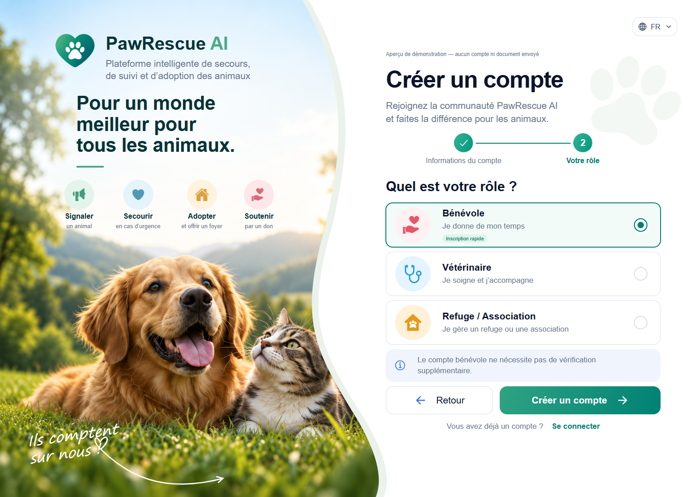
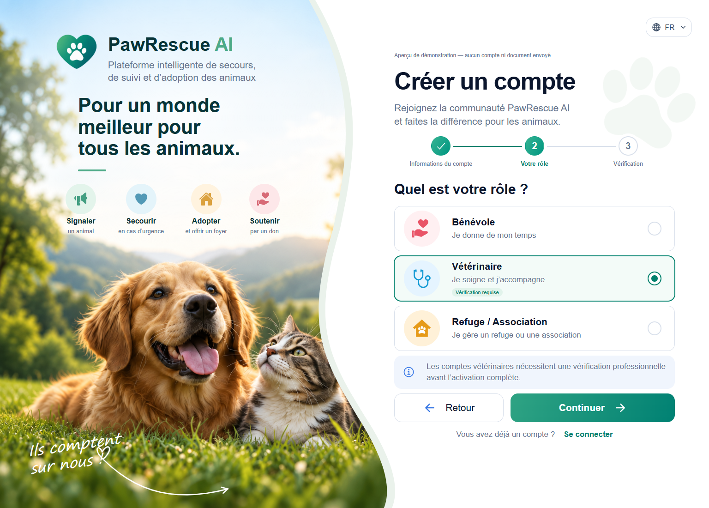
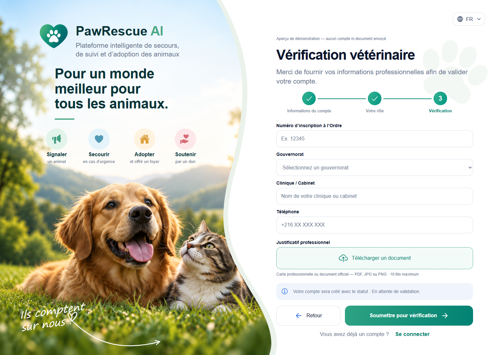
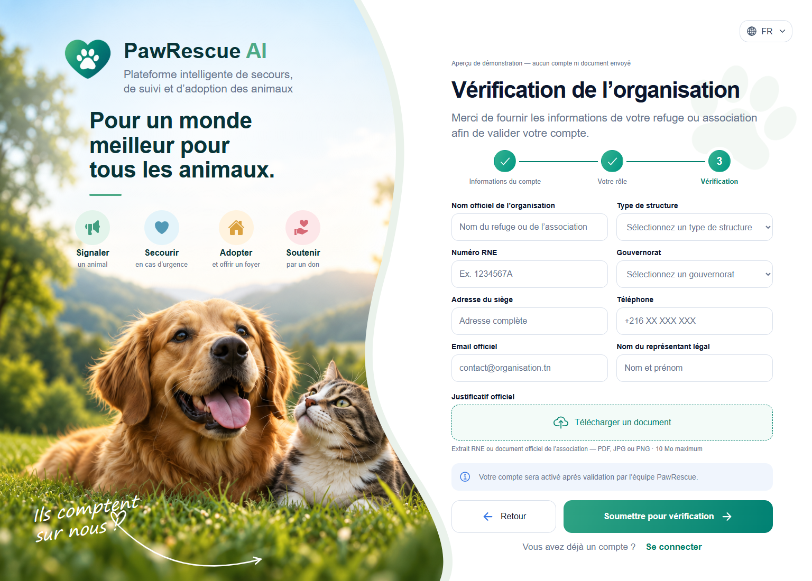
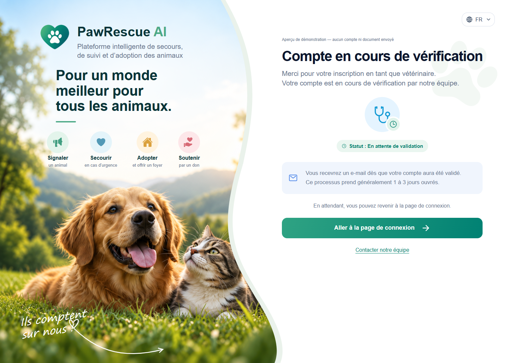
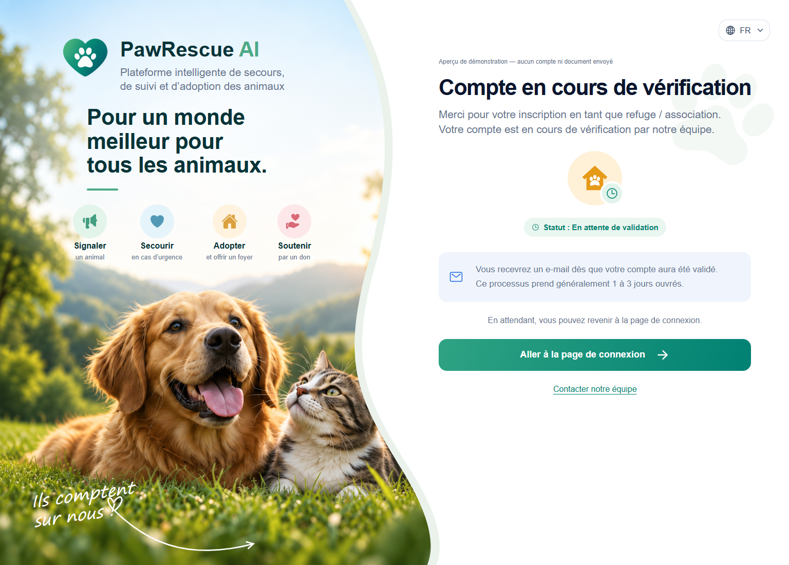

PawRescue AI — Parcours d’inscription1. Bénévole — inscription rapide

Ouvrir l’aperçu interactif →
2. Vétérinaire — choix du rôle

Ouvrir l’aperçu interactif →
3. Vérification vétérinaire

Ouvrir l’aperçu interactif →
4. Vérification refuge / association

Ouvrir l’aperçu interactif →
5. Confirmation vétérinaire

Ouvrir l’aperçu interactif →
6. Confirmation refuge / association

Ouvrir l’aperçu interactif →